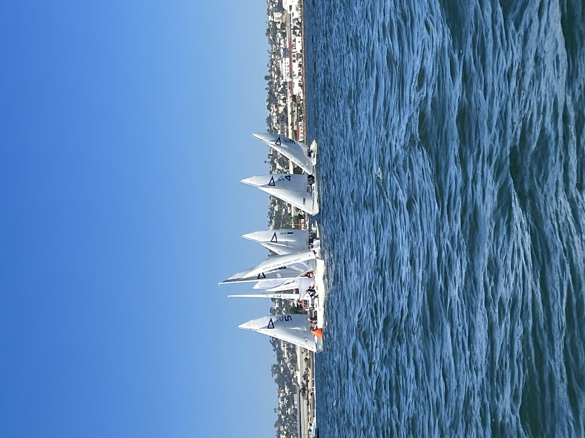
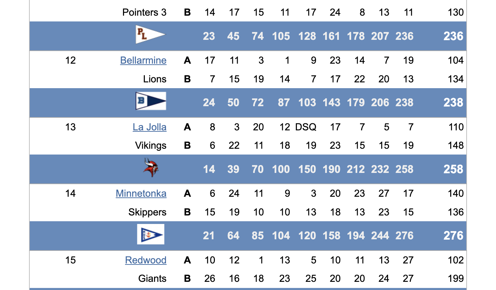
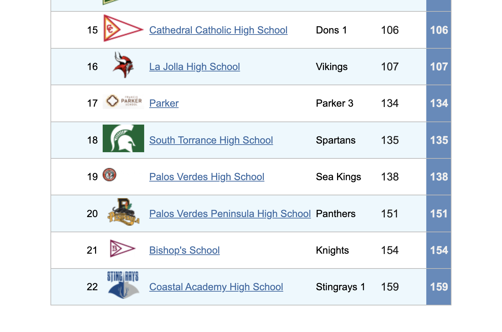
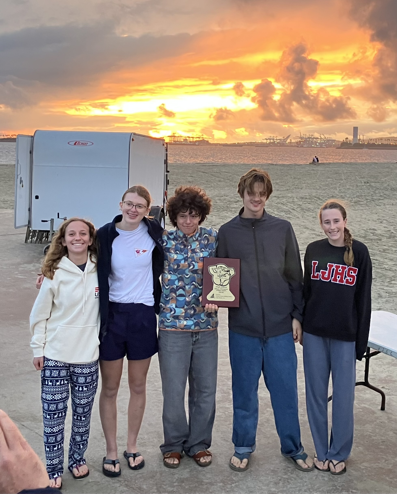
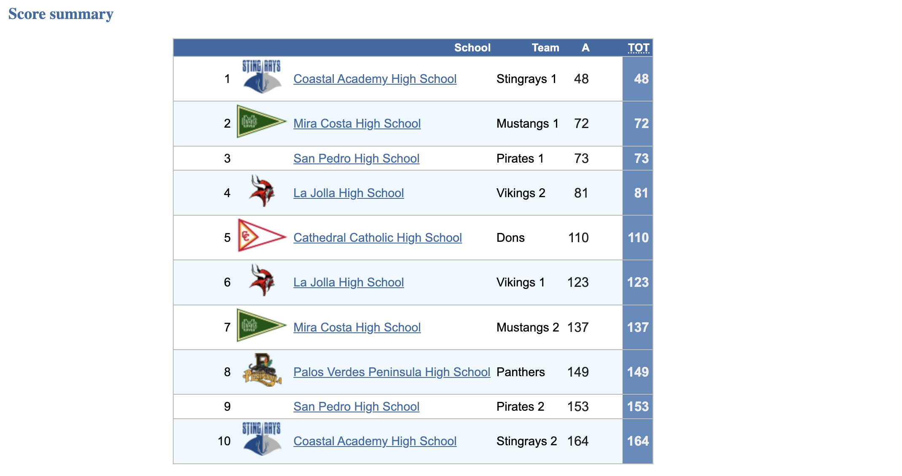
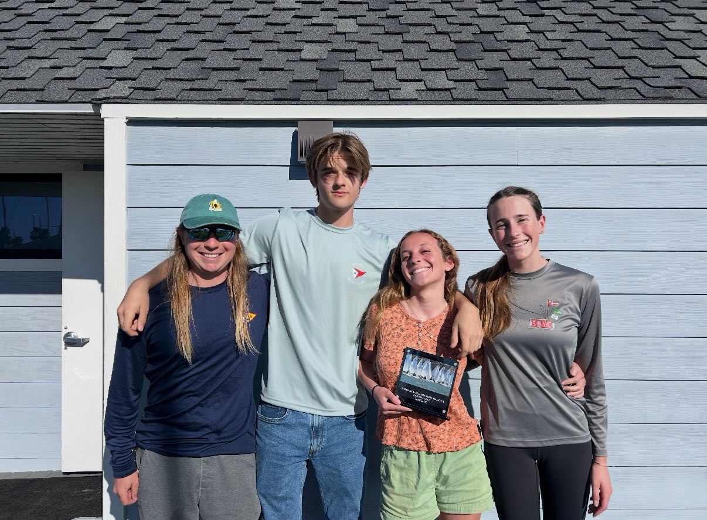

Regattas 2025-26
Stay tuned! Practices are just beginning for the 2025-26 sailing season!
SoCal #1 - Gold & Silver
NHYC, Newport, CA
September 13, 2025
Hosted in Newport Harbor, the first day of high school racing had shifty, patchy winds. This provided great racing practice for some of the returners and the new sailors on the team. Overall, it was a great day of sailing and LJHSST took home second place in both Gold Fleet and Silver Fleet.

PCISA Keelboat Qualifier
SDYC, San Diego, CA
September 20, 2025
The team learned a lot about sailing J22s and had a good time figuring out how to sail the boat considering their minimal experience leading up to the event. The team sailed together right in front of the airport and USS Midway on the waterfront. Good wind allowed for six races to be completed on the first day, and the team rounded the windward mark in first in the last race! Oveall, they got 9th out of 10.

PCISA Girls Invitational
MBYC, San Diego, CA
October 18-19, 2025
LJHS sailed strong throughout the weekend.

SoCal #2 - Silver
BYC, Newport, CA
October 25, 2025
The young team gained good racing experience while sailing in silver fleet.

Anteater - Silver
NHYC, Newport, CA
November 8-9, 2025
LJHS Sailing had an awesome weekend at the Anteater Regatta, sailing well consistently through the weekend and finishing first overall in Silver fleet out of 30 boats!

SoCal #3 - Gold & Silver
MBYC, San Diego, CA
December 14, 2025
In our home waters, the team had a great time practicing in the shifty waters we know best. With a new skipper in Gold, they finished 5/11. The silver boat finished 10/19, to round off a great weekend!

Rose Bowl - Silver
USSCLB, Long Beach, CA
January 3-4, 2026
Through stormy winter conditions with lots of rain, shifty conditions, and varying wind strengths, the team sailed strong to win another first place in Silver fleet!

SoCal #4 - Gold & Silver
ABYC, Long Beach, CA
January 24-25, 2026
With strong, consistent wind, the team learned a lot and was reminded of last year as they were challenged by starts. With 2 gold teams and 1 silver team, LJHS Sailing had a great showing and learning experience at SoCal 4!

Golden Bear - Silver
EYC, Oakland, CA
February 21-22, 2026
LJHS Sailing had an awesome weekend at Golden Bear with incredibly puffy conditions that were windy the first day and died out the second day. The team sailed well and took home third place!

Gaucho - Silver
SBYC, Santa Barbara, CA
March 7-8, 2026
With a younger team attending Gaucho to get practice at a PCISA 10%er, the team had a fun regatta, getting 16/30.
SoCal #5 - Gold & Silver
SWYC, San Diego, CA
March 14-15, 2026
LJHSST brought 2 boats to SoCal 5 to wrap up the SoCal season, getting 4/16 in Gold and 12/16 in Silver fleet!